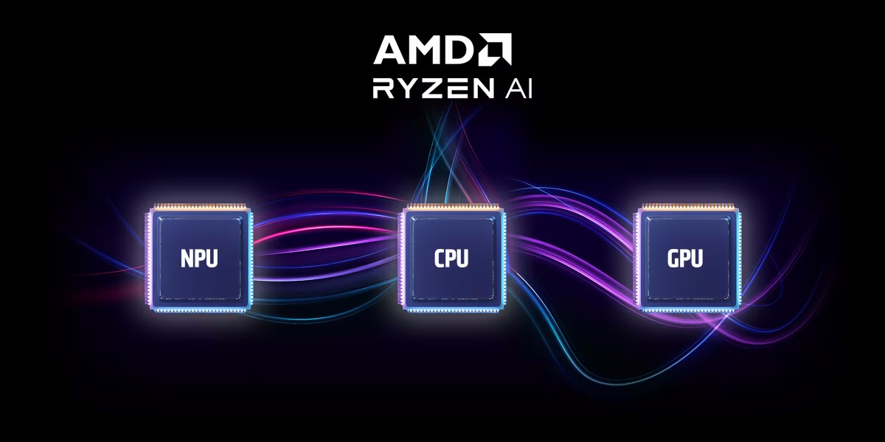

Designing for the Neural Processing Unit on AMD Ryzen AI with Open-Source Tools¶
Abstract¶
In this tutorial, we will describe the AMD Ryzen AI architecture platform, discuss the neural processing unit (NPU), and provide hands-on experience with the open-source software tools to implement designs. AMD Ryzen AI is the first in a new class of NPUs designed for x86 computers. Built on the AMD XDNA™ spatial dataflow computer architecture, the NPU consists of a tiled array of AI Engine processors, a set of VLIW vector processors with adaptable interconnect, designed to offer lower latency and better energy efficiency.
Participants will first gain insight into the system architecture of an x86 Ryzen AI processor and the AI Engine compute and data movement capabilities through AMD’s newly released Riallto open-source exploration framework. Riallto lets users explore the NPU architecture and the programming tools that are available for Ryzen AI running on Jupyter notebooks. A hands-on tutorial will guide attendees through a series of examples showing how to program the NPU using vision processing, AI, and the steps towards building other designs for Ryzen AI.
Agenda¶
The times in this agenda are tentative.
Time |
Topic |
|---|---|
9:00 AM – 10:30 AM |
Tutorial Welcome and General Introductions Introduction to Ryzen AI NPU and Riallto Explore NPU architectural features with Riallto |
10:30 AM – 11:00 AM |
Coffee Break |
11:00 AM – 12:30 PM |
Write your own compute kernel and connectivity AMD Ryzen AI Software MLIR-AIE |
Reference material can be found here: riallto.ai.
About Us¶
Presenter: Dr. Mario Ruiz
Mario is a member of technical staff in AMD University Program. As part of this role, he delivers training workshops for academics on the latest AMD tools and technologies. Mario completed his PhD in the Autonomous University of Madrid, which was focused on exploring High Level Synthesis tools in the context of networking. Mario is an active contributor to Riallto.
This tutorial is also organized by: Dr. Joseph Melber, Dr. Phil James-Roxby, Dr. Kristof Denolf and Dr. Andrew Schmidt
We are part of the Advanced and Research Development team at Advanced Micro Devices, Inc. (AMD)
Contact Us¶
You can reach us at aup@amd.com
Register¶
29 June - 3 July, 2024
9:00 AM - 12:30 PM
In Person: Check the ISCA 2024 site for more information. https://iscaconf.org/isca2024/